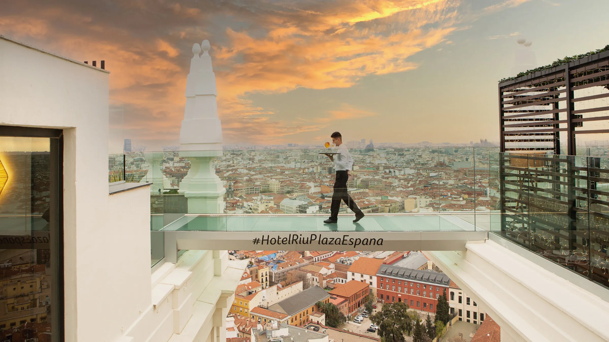

A parte de la amplia oferta de Ocio Nocturno en la capital, la vida para los diurnos también
existe. Madrid ofrece una amplia variedad de terrazas y zonas para "tomarse algo" disponible para todos
los públicos. Aqui os dejamos una lista de los sitios mas "atractivos" para pasar la tarde y tomar el
aperitivo:
- RIU plaza de España
- Barrio de las Letras
- Plaza de Santa Ana
- Diego de León